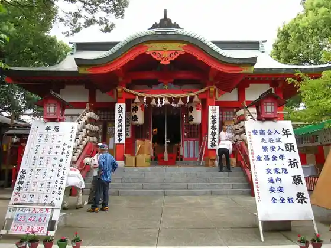
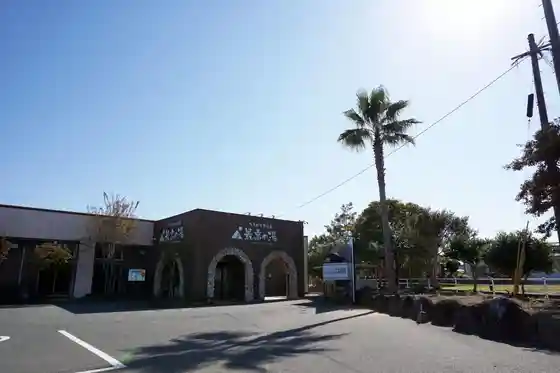

Kosen Dago (Omuta)
Omuta, Fukuoka · 0944-58-1711 · Official / source link
Yachi Yan Do Omuta Zoo
Omuta, Fukuoka · 0944-56-4526 · Official / source link
Miikeko (Hikari no Koro)
Omuta, Fukuoka · 0944-41-2750 · Official / source link
Shi Uma Tenmangu Shrine (Miyahara Tenmangu Shrine)
Omuta, Fukuoka · 0944-52-3538 · Official / source link

Omuta Tennen Onsen Saiko Baths
Omuta, Fukuoka · 0944-53-8126 · Official / source link

Miike Tanko Mikawa Ko Ato
Omuta, Fukuoka · 0944-41-2501 · Official / source link
Shi Uma Tenmangu Shrine Uso Kae Festival
Omuta, Fukuoka · 0944-52-3538 · Official / source link
MPLC Sekitan Kan
Omuta, Fukuoka · 0944-53-2377 · Official / source link
Roadside Station Omuta Hana Purasu Kan
Omuta, Fukuoka · 0944-50-1187 · Official / source link
Kumano Shrine (Omuta)
Omuta, Fukuoka · 0944-53-0137 · Official / source link
Kindaika Sangyo Isan (Sekai Isan (Meiji Nippon no Sangyokakumei Isan))
Omuta, Fukuoka · 0944-41-2539 · Official / source link
Miikeko
Omuta, Fukuoka · 0944-41-2515 · Official / source link
Somoku Manju (Eguchi Sakae Shoten Main Shop)
Omuta, Fukuoka · 0944-52-4829 · Official / source link
Fuko Tera no Garyu Ume
Omuta, Fukuoka · 0944-52-2212 · Official / source link
Mitsui Minato Kurabu
Omuta, Fukuoka · 0944-51-3710 · Official / source link
THE TRAILERHOUSE VILLAGE Omuta SPA
Omuta, Fukuoka · 0120-668-126 · Official / source link
Omuta Ritsu Miike Karuta History Museum (Karutakkusu Omuta)
Omuta, Fukuoka · 0944-53-8780 · Official / source link
Romendensha 204 Go Kafe (hara harmony coffee)
Omuta, Fukuoka · 0944-41-2750 · Official / source link
Omuta Tomodachiya Ehon Art Museum (Omuta Zoo Nai)
Omuta, Fukuoka · 0944-32-8050 · Official / source link
Miike Tanko Miyahara Ko
Omuta, Fukuoka · 0944-41-2750 · Official / source link
Minna no Tsuitachi Shiikuin Experience
Omuta, Fukuoka · 0944-56-4526 · Official / source link
Amagi Yama
Omuta, Fukuoka · 0944-52-2212 · Official / source link
Shiro Kokko
Omuta, Fukuoka · 0944-58-1340 · Official / source link
Omuta Yofu Katsu Domburi
Omuta, Fukuoka · Official / source link
Miike Tanko Senyo Tetsudo Shiki Ato
Omuta, Fukuoka · 0944-41-2471 · Official / source link
Suwa Park
Omuta, Fukuoka · 0944-41-2782 · Official / source link
Hagi no O Burial Mound
Omuta, Fukuoka · 0944-41-2515 · Official / source link
Kurosaki Park
Omuta, Fukuoka · Official / source link
Yugengaisha no Ri An Kataoka
Omuta, Fukuoka · 0944-57-3500 · Official / source link
Ariakekai no Yuhi
Omuta, Fukuoka · 0944-41-2750 · Official / source link
Ajisai Festival
Omuta, Fukuoka · 0944-54-7501 · Official / source link
Omuta Kanko Plaza
Omuta, Fukuoka · 0944-57-0101 · Official / source link
Enmei Park
Omuta, Fukuoka · 0944-52-2212 · Official / source link
Megane no Matsunaga
Omuta, Fukuoka · 0944-56-8855 · Official / source link
Kurosaki Kanzeon Tsuka Burial Mound
Omuta, Fukuoka · 0944-41-2515 · Official / source link
Tanko no Saiten
Omuta, Fukuoka · 0944-41-2750 · Official / source link
Teirin Tera (Ajisai Tera)
Omuta, Fukuoka · 0944-52-2212 · Official / source link
Gatsu to Yuyake
Omuta, Fukuoka · 090-4342-0328 · Official / source link
Kurokoromikan (O Kashi no Kitahara)
Omuta, Fukuoka · 0944-58-0915 · Official / source link
Sen Tsuka Burial Mound
Omuta, Fukuoka · 0944-41-2515 · Official / source link
Usu Kaburi (Yatsurugi Shrine)
Omuta, Fukuoka · 0944-41-2750 · Official / source link
Okuriifu (Ka Ho Daifuku Main Shop)
Omuta, Fukuoka · 0944-53-3333 · Official / source link
Ishibashi Ya
Omuta, Fukuoka · 0944-58-6683 · Official / source link
Uji Yama Tsugen Tera
Omuta, Fukuoka · 0944-68-5926 · Official / source link
Gallery Cafe Viridian
Omuta, Fukuoka · 0944-56-4788 · Official / source link
Miyaura Sekitan Memorial Park
Omuta, Fukuoka · 0944-41-2750 · Official / source link
Fujita Tenmangu Shrine
Omuta, Fukuoka · 0944-41-2515 · Official / source link
Enmei Park Amagi Yama (Omuta)
Omuta, Fukuoka · 0944-41-2750 · Official / source link
Tanko Fushi ((Ari) Kashi no Ito Jun Ka Kobo Ito)
Omuta, Fukuoka · 0944-58-4866 · Official / source link
Yamada Ya Chaho
Omuta, Fukuoka · 0944-53-0050 · Official / source link
Mikasa Shrine
Omuta, Fukuoka · 0944-53-0606 · Official / source link
Somoku Manju
Omuta, Fukuoka · 0944-41-2750 · Official / source link
Ariake Kantorii Club
Omuta, Fukuoka · 0944-56-3131 · Official / source link